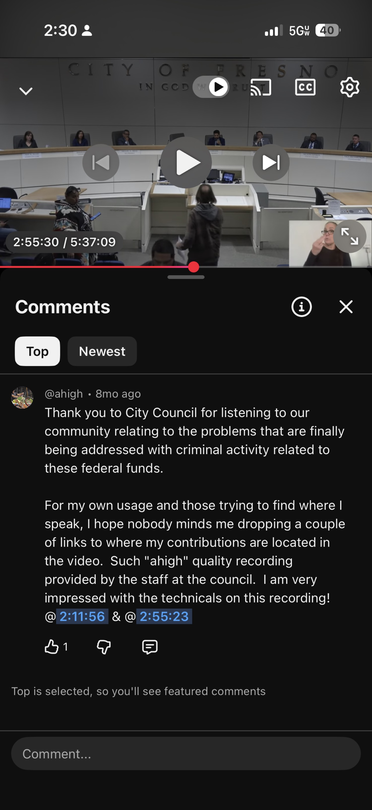
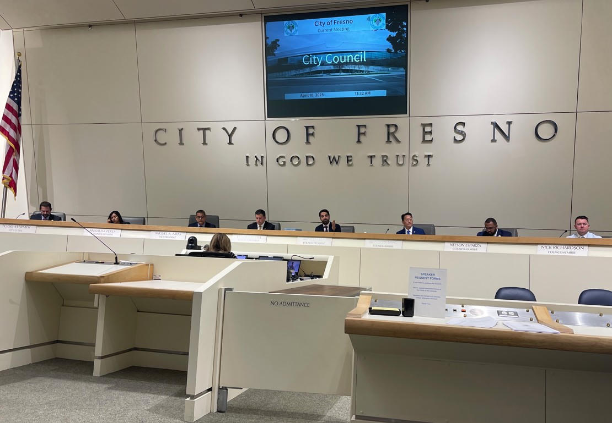

On December 4, 2025, during the regular meeting of the Fresno City Council, public comment was taken on the hearing for community needs in the development of the 2026–2027 Annual Action Plan for federal funding through HUD CPD. Item ID 25-1346.
Two contributions from the High Tower District were recorded. The second begins at 2:55:23. The clerk calls the name, then the comment runs about three minutes.
Aaron Hightower · Fresno City Council · December 4, 2025
Watch from the exact moment
Start: 2:55:23 · Listen: about 3 minutes · Full meeting 5:37:09
He thanks the room, then names youth drug sales, a green-light tagging, the April 19 shooting, and federal-fund fraud he ties to Somalia.
Spoken Record
Same block as the August 19 page. Reconstructed from the City of Fresno auto-captions on the official file. Filler repeats cleaned. The City file has no human transcript and no speaker speech-to-text draft was attached to this slug. Caption heard "Vaness," "Samoa," and "Somalies." Restored here to Van Ness, Somalia, and Somalis. The Somalia line names Senator Massie and Marjorie Taylor Greene in the same breath as the federal-funds hearing.
I also want to thank everybody for giving me the opportunity to speak today. And this is not rehearsed or written, but I've spent a lot of time. You mentioned Belmont and Van Ness. I spent a lot of time at Belmont and Van Ness. I spent a lot of time at 722 Blackstone at the 7-Eleven. I spent a lot of time at Olive and Wishon. And I live near the Fulton intersection where the canal is over there. So I've got a front row seat to a lot of systemic problems with drug usage. And it doesn't just concentrate in one area.
The most concerning area is frankly the youth. And I see youth purchasing, using, primarily marijuana. But I've witnessed what appears to me, let me just say what appears to me, gang sales of marijuana by children that are riding bicycles and doing haircuts and spray painting PC 594 green light. And it kind of upsets me that I don't see enough people caring about this.
And I've done a lot of trying to understand these things. And in my mind, it equates with corruption. And I just want to implore everybody to maybe even take a step back and ask yourself what you're not doing and challenge yourself and any higher power that you might have to earnestly try to do the right thing by our children. Because even if we fix things for addicts that are already 40 years old, it's these kids that have the greatest opportunity.
And I want to tell everybody when that shooting happened on April 19th, the first time I did see you on the street, Miguel, and you are on the street, but I don't know if you remember me, but I did address you. And subsequent to addressing you, the kids at that barber shop came six days before the murder, were trying to buy a bicycle from me. And I haven't been digging into the details. I don't really want to know. My heart is pounding and as much as I dig into corruption, I get afraid. I have a target on my back. So I'm not trying to attack any particular individual. I love everybody. I don't hate anyone.
But it disgusts me as I contemplate the possibility as we're talking about this federal funding. Look at what's going on in Somalia. Listen to Senator Massie and Marjorie Taylor Greene. Those are role models. And the other two people that successfully got these predators out in the open.
And I'm an FBI whistleblower. I'm a victim of a pedophile. I've been accused of being a pedophile by the same guy who spray paints the green light over there at the Fast and Safe. But I'm out there more than anybody else unless someone can tell me who's out there more.
And I'm appealing to everybody. Try and do the right thing by these children first and all of these other individuals that are grabbing at money for their own personal selfish needs. Look at the Somalis and use that as a guide for what the right thing is to do. Thank you.
Clerk, just before the comment: "Mr. High Tower, you got a time." The comment ends near 2:58:30. Next speaker is called after the thank you.
Meeting Context
Community needs for the 2026–2027 Annual Action Plan (HUD CPD federal funds). ID 25-1346.
Youth drug sales, PC 594 green light, and criminal activity tied to those federal funds.
2:55:23 into the recording. 10,523 seconds. About three minutes.
City of Fresno Council, Boards, and Commissions official YouTube channel.
From the YouTube comment left the same day
“Thank you to City Council for listening to our community relating to the problems that are finally being addressed with criminal activity related to these federal funds.”
— @ahigh · December 4, 2025 · pointers at 2:11:56 and 2:55:23


Sources
- Fresno City Council Meeting 12/4/25 — Official recording, City of Fresno Council, Boards, and Commissions (5:37:09)
- Direct link to 2:55:23 — Second public comment. Spoken record reconstructed from the English auto-captions on this file, October 6, 2026.
- Follow the Law — August 19, 2026 Planning Commission record. Same Spoken Record block.
- Meeting date: Thursday, December 4, 2025 · 9:00 a.m. · Council Chambers, Fresno City Hall
- Relevant hearing: ID 25-1346 — Public comments on community needs for the 2026–2027 Annual Action Plan (HUD CPD)
- California Penal Code 594, vandalism, cited in the comment as the green-light spray paint.
Why it matters
The December 4 hearing was the formal channel for community needs on the next HUD CPD action plan. The second comment did not stay inside a housing-unit request. It put youth drug sales, a green light, and a federal-funds warning on the official tape.
The recording is the notice. This page is the index. Same job as the August 19 record: the words stay attached to the minute, so nobody has to scrub a five-hour file to find them.